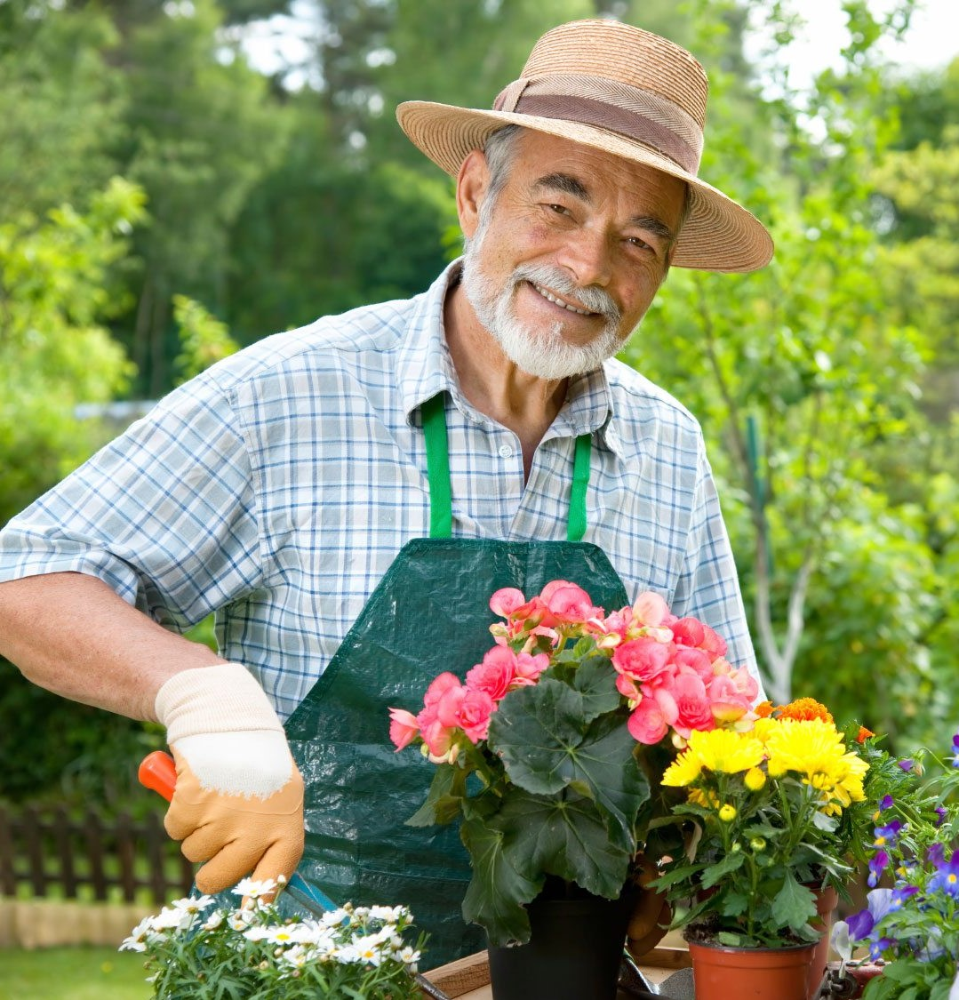

Type: Primary

Name: Maria Popescu
Background
Date of Birth: 02/13/1977
Gender: Female
Location: Iasi, Romania
Work place: Transilvania Bank, bank employee
School: Colegiul Economic Virgil Madgearu
Faculty of Economics, Administration and Business Iasi
Technology Level: medium
Main Points
Maria has a passion for plants.
She thinks about getting a degree in biology.
She would love to be surrounded by plants.
Detailed Description
Maria has been working in the banking business for more than 8 years. After her father died when she was young from a car accident, she was raised by her mother. In her free time she volunteers and likes to get involved in social cases. She enjoys listening
to the radio, watching sports and dancing. She is very empathetic and loves bringing a smile on people's faces. In the last year she began to have a passion for nature and plants. In the future, she wants to have as many plants as possible
to take care of. She buys new plants every week, so sometimes is hard for her to remember for each individual plant when it was the last time she watered / added fertilizer, and needs an app that can do that for her. Also, having no advanced
studies in biology, she wants an application that will make her work easier and helps her find all the information about her plants in one place. Because she doesn't have biology studies, she would love to learn more about plants and she
is thinking about getting a degree in biology.
Goals
Maria wants an efficient and easy to use app that can help her with all her plants.
She wants to make as many people happy as possible.
She wants to get a biology degree to help
her develop her passion about nature.
Frustrations and Pain Points
-
Maria would like a section where she can ask an opinion from a specialized person about a specific plant.
-
She thinks it would be helpful a feature that can scan a plant an obtain informations, rather that writing its name.
-
A more interactive design would attract more people.
References
-
Scenarios
Scenario 1: Maria is at the store and sees a beautiful plant on a shelf and she wants to know its name. The pot has a label on which the name of the plant is not visible clear and she doesn't sees any employees around. A scan feature it will come in handy.
Scenario 2: Maria has more than 50 plants and can't remember the last time she watered a specific plant. She can't remember if it was 2 weeks ago or 2 month ago. She can check the last time she watered the plant by entering the app and look for her in
My plants section. If the plant needs constant watering and Maria didn't mark as watered, the plant will appear in Home page because she needs "attention".
Other Details
She wants to have a family in the future and travel around the world. She wants to buy a photo camera and make an album of every spectacular view.
Type: Primary

Name: Banica Ana
Background
Date of Birth: 07/07/2000
Gender: Female
Location: Cluj, Romania
Work place: student
School: Colegiul National Mihai Viteazul Turda
Biology and Geology Faculty UBB Cluj
Technology Level: medium
Main Points
Ana is a biology student who loves to be surrounded by plants.
Detailed Description
Ana is student at the Biology faculty in Cluj. She enjoys social card games, travelling and yoga. She is stable and careful, but can also be pessimistic and a bit moody. Ana's best friend is a law student called Irina Cazacu. They know each other since
they were little kids. Irina seemed to inherit Ana's passion about plants.
Goals
She wants to finish her studies and get her bachelor's degree.
Frustrations and Pain Points
-
Ana would love to use a scan plant feature because she can find the plant easier this way.
-
She also would like if the app would have a green theme.
-
A good feature can also be the possibility to import an image to find a plant. Also, helpful would be that the app has some filters that can find plant after scientific name.
References
-
Scenarios
Scenario: Being a student is a full time job, and Ana has so much work to do for her assignment, especially with her paper in order to get her bachelor's degree, and needs an app that can help her take care of her plants, so she set reminders to not let
her forget to water her plants.
Other Details
She wants to move in another country after college and take all her plants with her.
Type: Secondary
Name: Ioana Dumitrescu
Background
Date of Birth: 19/11/1994
Gender: Female
Location: Timisoara, Romania
Work place: Florist
School: Liceul Teoretic "Vlad Tepes" Timisoara
Technology Level: low to medium
Main Points
Ioana is a plant passionate person.
She wants to start a business with plants.
Detailed Description
Ioana was until recently a receptionist. She enjoys recycling, theatre and social media. She is intelligent and reliable. She quit her job because she wanted to start a new business that can fulfil her passion with plants. She wants to keep track of all
her plants because she wants to offer the customers the best possible service. That means that she needs an app where she can store all the informations about them.
Goals
She wants to prosper with her business and become known for her services.
Frustrations and Pain Points
-
Ioana would love to use a scan plant feature because she can find the plant easier this way.
-
A good feature would be keeping track of how many plants of one kind the user has.
References
-
Scenarios
Scenario 1: Ioana has a lot of plants and each one needs to be watered at different intervals. Ioana can use reminders to help her keep track of each plant's schedule and not lose money on plants in case they wither or die, but also she can offer the
best service to her customers.
Scenario 1: Despite the fact that Ioana doesn't have a degree in botany, she can find informations and recomandations on each plant's page and can create cards with those informations to help the customers after they bought the plant.
Other Details
-
Type: Secondary

Name: Mihai Popa
Background
Date of Birth: 02/13/1977
Gender: Male
Location: Alba Iulia, Romania
Work place: Gardener
School: -
Technology Level: low
Main Points
Detailed Description
Mihai enjoys baking, walking and spending time with his family. He and his wife have a passion about flowers and nature.
Mihai works as gardener in his neighbourhood.
Goals
-
Frustrations and Pain Points
-
A help section or a demo would be very helpful for people who aren't so familiar with the technology.
References
-
Scenarios
-
Other Details
-